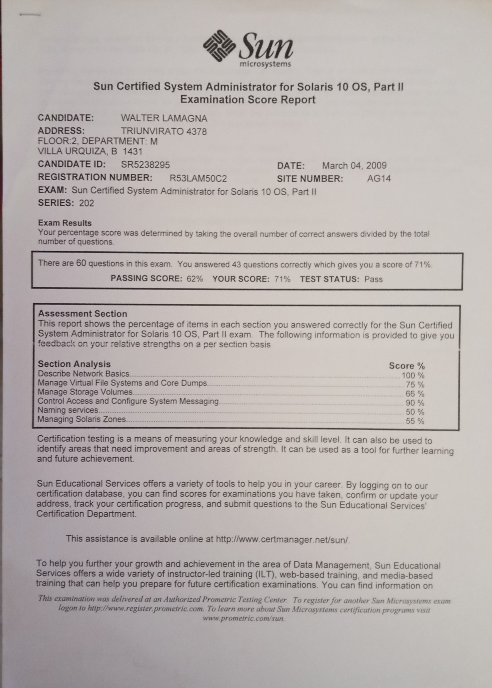
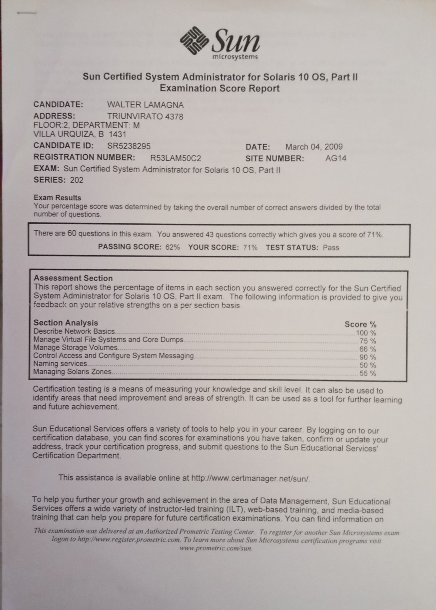

CertificadosA parte de mis estudios universitarios hice algunos cursos de post grado / certificados de la industria. La primera inversion post universidad fue la de Sun Solaris 10. Fue un proceso de varios meses de preparacion, leer libros, estudiar y asimilar todas las caracteristicas de este sistema.


 

Finalmente me enviaron el certificado y significo una gran felicidad tras tanto esfuerzo: Tengo otros cursos hechos por Coursera, estan en Linkedin. |